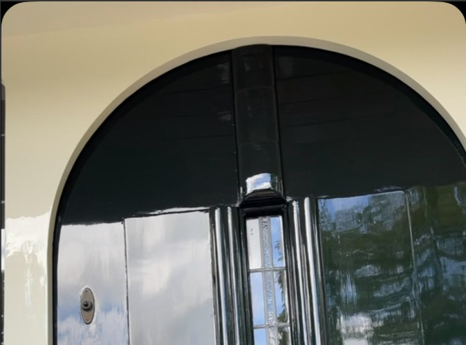

Een greep uit het schilderwerk dat Verlooij Schilderwerken de afgelopen tijd heeft uitgevoerd, waaronder een volledig project in Heiloo.


Een mooie klus afgerond in Heiloo: bij 4 woningen is alle beglazingskit vervangen en is het houtwerk tweemaal geschilderd met producten van Boonstoppel. Van kozijn tot voordeur — strak en weerbestendig afgewerkt.